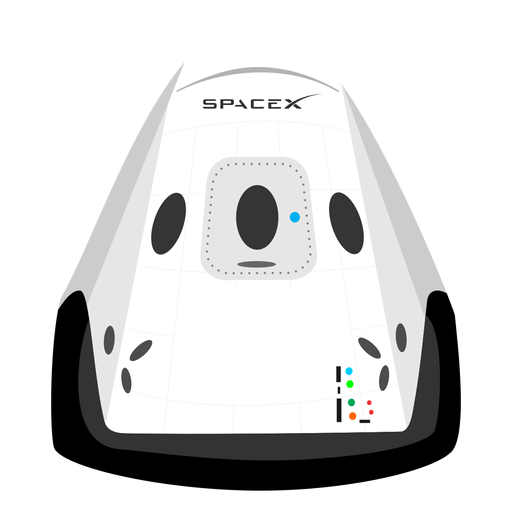

HyperBlog
Tu blog de cabecera
Aquí inicia la historia de un gran proyecto
Y este es el párrafo de inicio donde vamos a explicar las cosas increíbles que se pueden hacer con ramas

Los blogs son la mejor forma de compartir informacion y tus ideas. Mucho mas que ir a conferencias o salir en Youtube. Excepto si eres un Rockstar. Pero estadísticamente no lo eres... por ahora.
suscribete y dale like